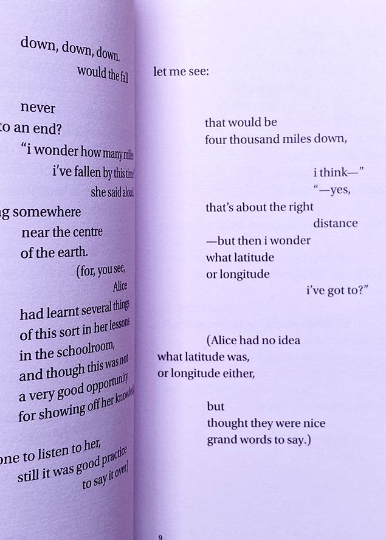

Dennis Grauel’s Brunswick Grotesque
Type specimen
Alice's Adventures in Wonderland
Printed book, a typographic exploration
designX
Visual identity for the University of Melbourne's design school's end of year exhibition.
In Conversation
Printed publication

The WeatherRoom
Interactive installation, in collaboration with Killian Hoppner
Rabbit of Seville
Animation, a typographic exploration
Watch Me Learn to Code
Website development, interactive coding, p5.js
The Forgotten Art of a Morning Stretch
A zine, type-setting without a grid, without (typical) typographic convention
The Magazine
Cinemagraphs, conceptual design
Click through to see this magazine move
Untitled
Typographic collage experimentation
Boys In Love
Visual identity and graphic outputs for Keelan Mak's EP, 'Boys In Love'
A Safe Pace Run Club
Branding and visual identity for 'A Safe Pace Run Club' and their social media presence
Book, in a book, in a book
Conceptual design project
A dystopian future, and a vending machine
Conceptual, 3d art
For Change Co
Rebrand project of an existing social non-profit organisation, and how design impacts people

Bubbles
A series of static, and animated, bubbles (learning Blender)
Blender experiments
Varying outputs from my desire to learn Blender
Brave Face
Visual identity and graphic outputs for Keelan Mak's EP, 'Brave Face'